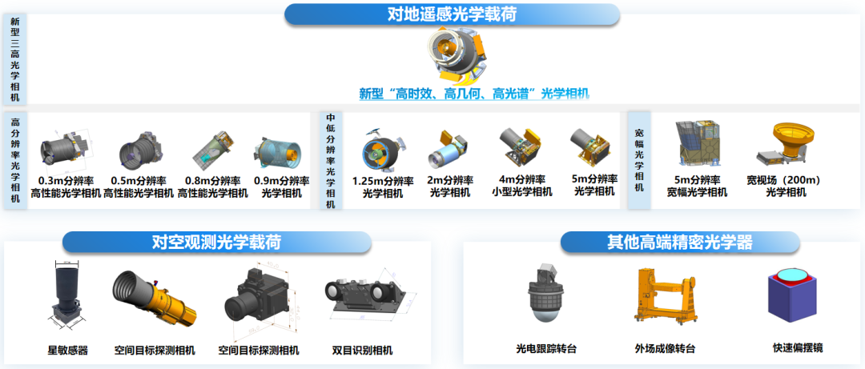

近日，宇航级光学载荷研发制造商苏州吉天星舟空间技术有限公司（以下简称“吉天星舟”）完成数亿元 B 轮融资，和基投资与苏高新金控、卓璞资本、聚合资本、元禾原点、元禾厚望、致道资本、中时资本、邦盛资本等机构联合投资，资金主要用于新一代超高分辨率光学载荷及星敏感器研发、智能制造产线扩建。
吉天星舟成立 5 年来始终专注于一件事：光学载荷，给卫星做“眼睛”。
光学载荷是遥感卫星最核心的部件，要理解它为什么重要，一个更直观的数据是产业链价值占比。在传统的遥感卫星产业链当中，卫星平台提供供电和姿控，光学载荷负责成像观测，地面系统完成数据处理，三者之中，光学载荷技术壁垒最高、价值量最大，通常会占到卫星成本的 50% 以上。
过去，国内能够实现批量化、市场化交付的宇航级光学载荷单位屈指可数，体制内科研院所主要服务于国家任务，整星公司多侧重自研自用，二者均不面向市场做商业化批量交付。随着低轨星座进入规模化部署倒计时，专注于光学载荷批产的商业公司则在技术创新、成本控制和快速市场响应方面展现出更多活力，也推动了产业链生态的进一步完善。
吉天星舟卡位的正是产业链中上游这一核心环节。一组数据是，过去几年吉天星舟已累计交付光学载荷 55 台，发射入轨 30 台，在轨成功率 100%，客户覆盖航天科技集团、航天科工集团等国家队及数十家商业航天公司，是国内品类最全、交付数量及在轨数量最多的，以宇航级光学载荷为主营业务的商业航天头部企业。
吉天星舟抓住了一个足够大、但却能够通过先发技术优势卡住大多数竞争者的市场“缝隙”，率先跑通了商业化路径。接下来的命题将是时机与规模——产能的部署，以及需求爆发的节奏是否足够快，快到让供需的齿轮精密匹配，转动更快的增长飞轮。